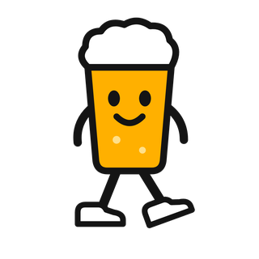
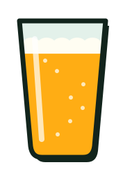
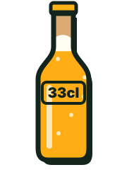
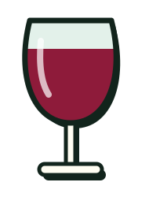
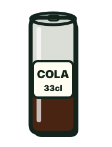

¿Cuántos tercios son tus pasos?
Calobirra cuenta lo que has andado hoy y lo traduce, a ojo, a calorías de caña, tercio, copa o lata. Una curiosidad con humor de bar para iPhone.
Próximamente en el App Store · iPhone · gratis con Plus opcional≈ 2,3 tercios
2 llenos + 1 al 30 %
≈ 326 kcal estimadas con 75 kg
Es una comparación de calorías, no una invitación. Caminar no compensa el alcohol ni dice cuánto puedes beber.
Cada bebida, con su forma
Tus pasos son los mismos; cambia el recipiente con un toque. Si salen 2,3, ves dos llenos y el tercero al 30 %, con el total siempre a la vista.

Caña250 ml
Tercio33 cl
Copa de vino150 ml
Lata330 mlGratis de verdad. Plus si te apetece.
Gratis
- Tus pasos de hoy
- Equivalencia con dibujo
- Caña y tercio, vino tinto, cola y cerveza 0,0
- Últimos 7 días
- Tarjeta del día y de la semana para compartir
Calobirra Plus
- Widget para la pantalla de inicio y la de bloqueo
- Vermut, tinto de verano, clara, sidra, cava, vino blanco y naranja
- Café con leche, horchata y leche con cacao
- Temas del bar: azulejo y pizarra
- Estilos de cerveza, todo tu historial y más tarjetas
Pago único, sin suscripción. El precio lo muestra el App Store.
Tus pasos se quedan en tu iPhone
Sin cuenta
No hay registro, ni servidor de Calobirra, ni publicidad, ni analítica de terceros.
Tú eliges la fuente
Movimiento del iPhone o, si lo autorizas, solo la lectura de pasos de Salud. Nunca se suman.
Compartir es cosa tuya
La tarjeta solo sale si pulsas Compartir, y no lleva tu peso. Lee la política de privacidad.
Calobirra es para mayores de 18 años. Las calorías son aproximadas, no es consejo médico y no registra lo que bebes. Caminar no compensa el alcohol.
Preguntas rápidas
¿Cómo se calcula?
Calorías estimadas = pasos × peso en kg × 0,0005. Luego se divide entre las calorías de la ración elegida (por ejemplo, un tercio de 330 ml a 43 kcal cada 100 ml). Puedes ajustar tu peso y las kcal por 100 ml en la app.
¿Funciona con el Apple Watch?
Si eliges Salud como fuente y autorizas la lectura de pasos, Calobirra lee los pasos que tu Apple Watch haya guardado en Salud.
¿Hay versión para Android?
De momento, solo iPhone.
¿Necesito ayuda?
Escríbenos desde la página de soporte.